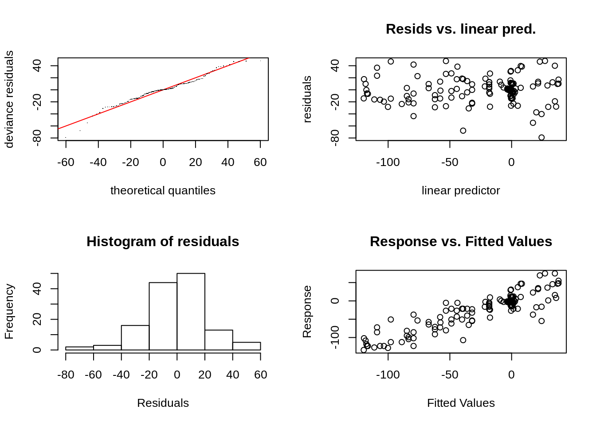

GAM
2020-08-28
img

Modèles additifs généralisés
Un modèle additif généralisé est un GLM dans lequel le prédicteur linéaire fait intervenir une somme de fonctions régulières des covariables. Les modèles additifs généralisés ont une structure de la forme suivante \[g(\mu_i)=A_i\theta+\sum_j f_j(x_{ji}),\, Y_i\sim\text{EF}(\mu_i,\phi)\] où \(Y_i\) est la variable réponse et \(\text{EF}(\mu_i,\phi)\) est une distribution de famille exponentielle de moyenne \(\mu_i\) et de paramètre d’échelle \(\phi\) et \(A_i\theta\) représente une componente paramétrique dans la modélisation.
Pour estimer les \(f_j\), on les décompose sur une base de splines. On note \(b_{jk}(x)\) la \(k\)ème fonction de la base de splines choisie, on suppose que \(f_j\) s’écrit \[f_j(x)=\sum_{k=1}^l b_{jk}(x)\beta_{jk},\] avec \(\beta_{jk}\) inconnu.
Base de splines
On veut construire une base de \(k\) fonctions splines \((s_1, \ldots, s_k)\). Pour ceci, ondéfinit \(k\) noeuds, par défaut les extréminités correspondent à \(x_{min}\) et \(x_{max}\).
Chaque fonction \(s_i\) vaut 1 au noeud \(i\) et 0 aux autres noeuds. En outre. Chaque fonction spline (cublique) est le recollement de \(k\) polynomes de degré 3 assurant une fonction de classe \(C^2\) sur l’intervalle, comme illustré ci-dessous (extrait du livre de S. Wood).
img
library(mgcv)## Loading required package: nlme##
## Attaching package: 'nlme'## The following object is masked from 'package:dplyr':
##
## collapse## This is mgcv 1.8-33. For overview type 'help("mgcv-package")'.library(tidyverse)
library(MASS)##
## Attaching package: 'MASS'## The following object is masked from 'package:dplyr':
##
## selectMods3 <- gam(accel~s(times,k=10,bs="cr"),data=mcycle)
gam.check(Mods3)
##
## Method: GCV Optimizer: magic
## Smoothing parameter selection converged after 8 iterations.
## The RMS GCV score gradient at convergence was 0.0002188377 .
## The Hessian was positive definite.
## Model rank = 10 / 10
##
## Basis dimension (k) checking results. Low p-value (k-index<1) may
## indicate that k is too low, especially if edf is close to k'.
##
## k' edf k-index p-value
## s(times) 9.00 8.39 1.15 0.94summary(Mods3)##
## Family: gaussian
## Link function: identity
##
## Formula:
## accel ~ s(times, k = 10, bs = "cr")
##
## Parametric coefficients:
## Estimate Std. Error t value Pr(>|t|)
## (Intercept) -25.546 1.951 -13.1 <2e-16 ***
## ---
## Signif. codes: 0 '***' 0.001 '**' 0.01 '*' 0.05 '.' 0.1 ' ' 1
##
## Approximate significance of smooth terms:
## edf Ref.df F p-value
## s(times) 8.39 8.867 53.84 <2e-16 ***
## ---
## Signif. codes: 0 '***' 0.001 '**' 0.01 '*' 0.05 '.' 0.1 ' ' 1
##
## R-sq.(adj) = 0.783 Deviance explained = 79.7%
## GCV = 544.48 Scale est. = 506.04 n = 133\[Y_i = Z_i^T\theta + \sum_{j=1}^p \beta_j f_j(x_{i}) + \epsilon_i\] où les \(f_j\) forment une base de spline, \(Z_i\) des variables utilisées comme dans un modèle linéaire, et \(x_i\) la variable pour laquelle on utilise une spline. Notons qu’on peut avoir des splines multivariés et plusieurs splines dépendant de différentes variables.
Dans le tableau, Parametric Coefficients correspond à la partie des effets linéaires et la partie smooth terms correspond au test sur la variable dont dépend le spline.
La dernière partie contient des informations sur la qualité d’ajustement du modèle type \(R^2\) et variance estimée.
Ce tableau contient les \(\beta_j\) devant les splines :
coef(Mods3)## (Intercept) s(times).1 s(times).2 s(times).3 s(times).4 s(times).5
## -25.54586 17.79652 -5.19623 -68.18822 -93.55637 -19.17075
## s(times).6 s(times).7 s(times).8 s(times).9
## 55.62357 32.75658 16.34183 23.85845Autres références :
- Elements of Statistical learning. Hastie et al.
- Site avec exemple, les données sont ici
- Livre de Simon Wood
- autre ref
- formation GAM en R